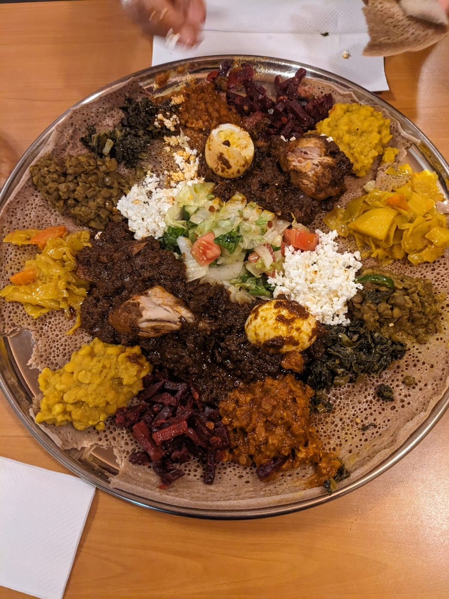

Ethiopian food & coffee · College & Dufferin · Saturdays & Sundays
Homemade Ethiopian food, every weekend.
Big veggie and meat combination platters on homemade injera, halal meat, plenty of vegan and vegetarian dishes, and Ethiopian coffee to finish. Open Saturdays and Sundays on College Street, with catering by order.
- Veggie & meat platters
- Halal
- Vegan & vegetarian options
- Ethiopian coffee
- We cater
On the menu
Combination platters
A veggie platter (for one, or for two to three) and a meat platter that feeds five or more, served on injera. One reviewer’s party of five ordered a mixed veggie + meat platter: “we could have fed 2 more people.”
Halal, vegan & vegetarian
The menu carries a halal mark and a reviewer calls it “completely halal.” The restaurant’s Facebook page says vegan options are available, with dishes like shiro (chickpea), messer wot (lentils) and gomen (greens). The menu describes the teff injera as gluten free; ask about cross-contact.
Coffee & catering
Ethiopian coffee poured from the jebena, and reviewers mention the coffee ceremony. The menu says “We cater!” and reviewers have ordered feasts ahead for pickup. Call (416) 824-2345.
Dishes on the menu posted in the shop (photo on the Google listing): shiro, ater kik wot, alicha messer wot, gomen, kay messer wot, tiqel gomen, special kitfo / dulet kitfo, doro wot and tibs (key or alicha). Prices aren’t shown here because the menu photo isn’t dated. Call to check today’s menu.
Weekends at Ethio Kana
Stay for the coffee
Sat & Sun · 12:30–9:30 p.m.
Ethio Kana serves its Ethiopian menu on weekends at 1118 College St, near College and Dufferin. Reviewers talk about homemade injera still warm from the griddle, huge platters to share, and hosts who make first-timers feel at home. Finish with Ethiopian coffee from the jebena.
“Incredible food and incredible humans. This place has it all.”
Gretel Meyer Odell, Google review.
What customers say
5.0 ★ from 134 Google reviews (checked Nov 11, 2026). Quotes are word for word. Each one says where it was read: on the Google listing itself, or on a public page that copies reviews. Google shows only a handful of reviews without signing in, so a few quotes are excerpts Google highlights, or a Google review copied by the CanadaResto directory.
★★★★★
Delicious meal, felt like we were being taken care of by our friend's mother!
We were a party of 5, and we asked for a mix veggie + meat platter. The portions are huge and we could have fed 2 more people. Completely halal and no frills. They also provide wonderful coffee and the place smells very nice thanks to their bakhoor
★★★★★
Fozia and her staff/colleagues are warm and welcoming and I have been coming back for years to enjoy her weekday business. When she began serving Ethiopian on weekends I was so excited to try it. My first experience was recently for my son's birthday. We were not able to plan to dine at the restaurant, so we ordered the food for the birthday feast for 5 in advance as we know she does catering orders. The value was great and the food was utterly mouthwatering. We enjoyed an assortment of veggie and meat dishes along with her amazing homemade injera. Truly the best injera we ever had...still warm from the griddle when we picked it up. We laid it out on platters the best we could at home, though...I'm sharing a photo, but I'm sure it would have looked better if we had been able to dine at the restaurant and had the platters prepared for us. However the taste was OUT OF THIS WORLD.
Incredible food and incredible humans. This place has it all. Every bite infused with love and heritage and care. I can't wait to go back and dine in to enjoy the full experience and the coffee ceremony.
Thank you Fozia! How lucky we are to have you in our neighbourhood! I can't decide what is better, your food or your welcoming smile! Let's call it a tie!
★★★★★
An absolute hidden gem at College and Dufferin! I’ve had the pleasure of getting to know the owners over the years, and they are genuinely some of the kindest, most welcoming people you’ll ever meet. Amazing hearts and even better food!
They’ve introduced me to Ethiopian cuisine through their weekend menu, and I’ve grown to absolutely love it. You can truly taste the love and care they put into their food.
So grateful to have such wonderful people in our neighbourhood. Highly recommend supporting this amazing local business! ❤️
★★★★★
The food was absolutely amazing! Every bite took me back to my childhood and brought back so many great memories. What made the experience even more special were the wonderful ladies working there. They took the time to talk with me, kept me company, and treated me like I was part of their family.
Great food, warm hospitality, and such a welcoming atmosphere. I’ll definitely be back! Thank you, Ethio Kana, for such a memorable experience! 🇪🇹
★★★★★
This food was new to me in flavor and presentation. It's a little buffet on your plate. Variety of vegetables, légumes and flavors deliciously combined and gently scoped with the Ethiopian bread.
The black coffee prepared by the host with the smell and taste of the Ethiopian coffee
Star rating not shown in source
Amazing selection of food, good quantities and great service
Star rating not shown in source
All the staff are so kind, and will help you pick some options from their menu.
Star rating not shown in source
Super fresh and flavorful and can’t beat the price.
Star rating not shown in source
Very friendly. Great service
From the table
Real photos from Ethio Kana’s public Google listing and its customers’ reviews. Tap to enlarge.
Visit Ethio Kana
1118 College St
Toronto, ON M6H 1B6
near College & Dufferin
| Monday | Closed |
|---|---|
| Tuesday | Closed |
| Wednesday | Closed |
| Thursday | Closed |
| Friday | Closed |
| Saturday | 12:30–9:30 p.m. |
| Sunday | 12:30–9:30 p.m. |
These are the hours on Google today: open Saturdays and Sundays only. Look for the Lebanon Express sign: Google’s photos of 1118 College St show that sign over the door, and a reviewer says the Ethiopian menu is served there on weekends. Call ahead for catering or large groups. Follow along on Facebook.